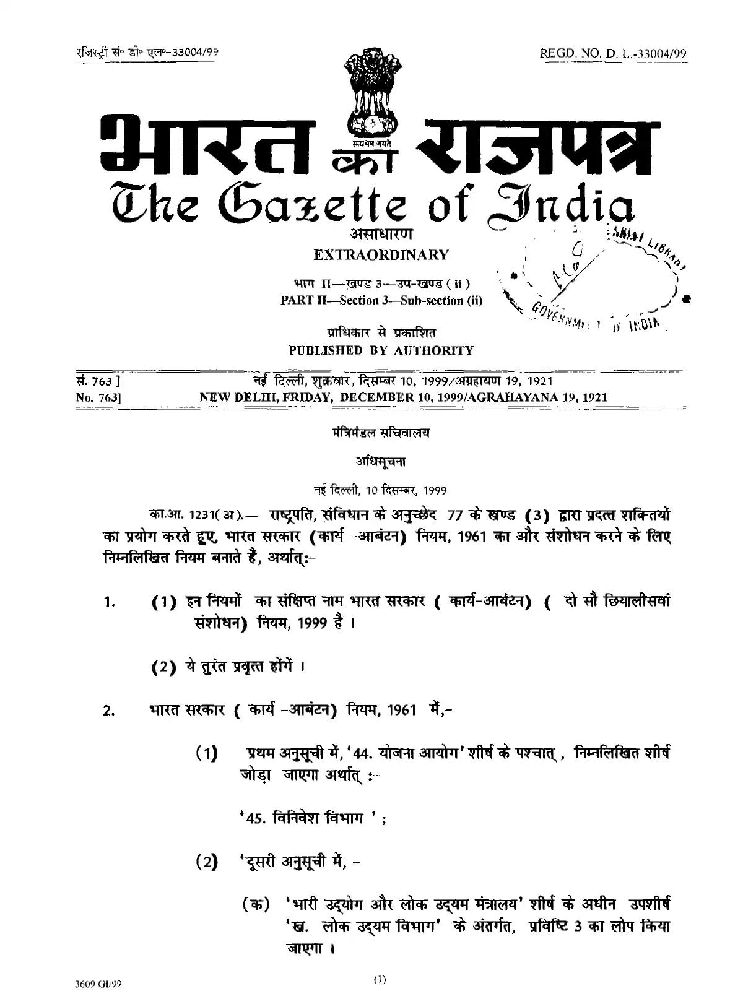
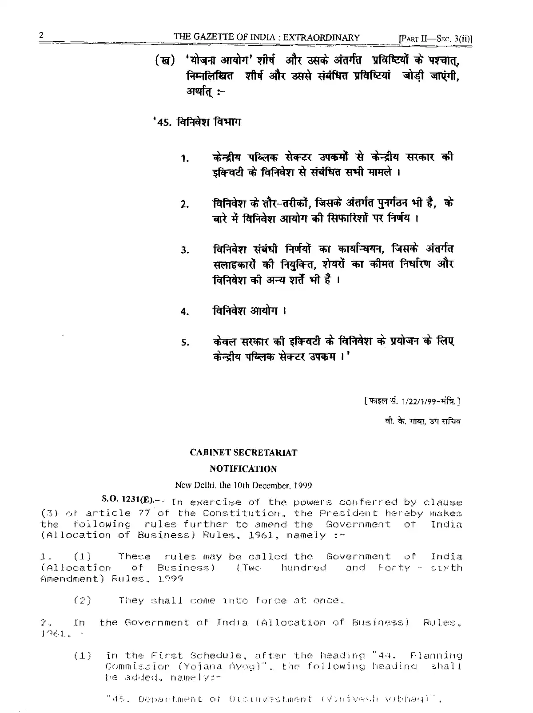
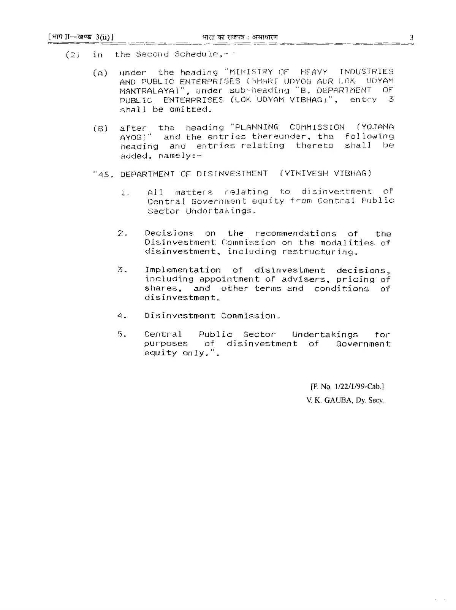

Amendment #246 (S.O. 1231(E), 1999)
3 changes: 1 to the First Schedule, 2 to the Second Schedule. 3 applied
What it did to the ministries
- bornDepartment of Disinvestment is created (4 subjects) change 1, 3 · histories: Disinvestment
The order, page by page
Page 1 of 4

Page 2 of 4

1after Schedule 1 › Planning Commission
- 45. Department of Disinvestment (Vinivesh vibhag) 44
applied at schedule 1 › department 45 in the Rules after #246
Page 3 of 4

23Schedule 2 › MINISTRY OF HEAVY INDUSTRIES AND PUBLIC ENTERPRISES › DEPARTMENT OF PUBLIC ENTERPRISES › entry 3
applied at schedule 2 › ministry MINISTRY OF HEAVY INDUSTRIES AND PUBLIC ENTERPRISES › department B › entry 3 in the Rules after #246
after Schedule 2 › PLANNING COMMISSION
- 45. DEPARTMENT OF DISINVESTMENT
- 1. All matters relating to disinvestment of Central Government equity from Central Public Sector Undertakings.
- 2. Decisions on the recommendations of the Disinvestment Commission on the modalities of disinvestment, including restructuring. { Implementation of disinvestment decisions including appointment of advisers, pricing of shares, and other terms and conditions of disinvestment.
- 4. H Disinvestment Commission.
- 15. Central Public Sector Undertakings for purposes of disinvestment of Government equity only.
applied at schedule 2 › department 45 in the Rules after #246
Page 4 of 4
How this document was read
Edits to the reading
| Date | By | Edit | Before → after |
|---|---|---|---|
| 12 November 2026 | claude | word corrected |
From the Government of India (Allocation of Business) Rules, 1961 and their amendments, as published by the Cabinet Secretariat (cabsec.gov.in), read by orgpedia. The readings of the older scanned gazettes have known gaps.